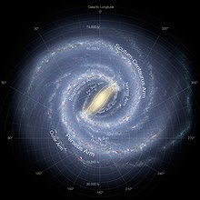

|
La Vía Láctea es una galaxia espiral donde se encuentra el sistema solar y a su vez la Tierra.
Su diámetro se estima en unos 105.700 años luz.
El nombre Vía Láctea proviene de la mitología romana, y esta de la griega,
que significa en latín camino de leche .
La Vía Láctea forma parte de un conjunto de unas cuarenta galaxias llamado Grupo Local
y es la segunda más grande y brillante tras la galaxia de Andrómeda.
La Vía Láctea comenzó como una o varias pequeñas regiones de sobredensidad en la distribución másica del universo poco después del Big Bang.
Algunas de estas regiones eran las semillas de los cúmulos globulares, en los que perduran las más antiguas estrellas que formaron la galaxia.
En algunas culturas está asociada a caminos, por ejemplo, los vikingos creían que llevaba al Valhalla, destino de las almas de los muertos,
mientras que los celtas aseguraban que se dirigía al castillo de la reina de las hadas.
En España, la Vía Láctea también recibe el nombre popular de Camino de Santiago, pues era usada como guía por los peregrinos de ese lugar.
En otros casos, como en las alegorías chinas y japonesas, se refieren a ella como un río de plata celestial.
Al igual que los vikingos y culturas asiáticas, los incas también tenían una creencia similar.
Ellos creían que la Vía Láctea era un río celestial llamado Hatun Mayu, el cual conecta al Kay Pacha (mundo terrenal) con el Hanan Pacha (mundo superior).
Al fallecer, se debía cruzar dicho río para iniciar una segunda vida al lado de los dioses.
Los mexicas o aztecas y otras culturas mesoamericanas creían que era el dios Mixcóatl (Serpiente de nube) que serpenteaba por el cielo nocturno,
dios de la cacería, de los sueños y carcelero de los monstruos estelares.
Partes de la Vía Láctea:
|

|